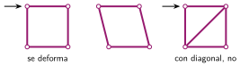
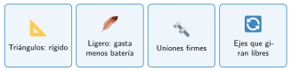
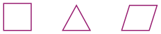

Estructura y materiales
🤔 Pienso5 min
Qué hago aquí: Piensa un momento y contesta con lo que ya sabes. No pasa nada si no lo sabes: es para empezar.
Une cuatro vigas en forma de cuadrado y tres en forma de triángulo. Empuja una esquina de cada figura. ¿Cuál se deforma?
📖 Leo y aprendo15 min
Qué hago aquí: Lee despacio, mira los dibujos y los ejemplos, y quédate con la idea clave del final.
La estructura es el esqueleto del robot. Sujeta los motores, la placa y la batería.
Una buena estructura es:
- rígida: no se deforma;
- resistente: no se rompe;
- ligera: pesa poco, así los motores gastan menos batería.

Por eso las grúas, los puentes y los chasis llevan triángulos.

✏️ Hago25 min
Qué hago aquí: Haz las actividades en orden. Empieza siempre por las básicas.
Escribe las tres cualidades de una buena estructura.
Rodea la figura que no se deforma.

Une cada pieza con su material.
| Eje de una rueda • | • Cartón |
| Prueba rápida de una idea • | • Plástico impreso en 3D |
| Soporte a medida para un sensor • | • Metal |
En parejas: con las piezas del kit, construid un marco rectangular que no se deforme. Dibujadlo.
✏️ Puedes responder escribiendo, con un dibujo o un esquema, o contándolo en voz alta.
🚀 Amplío (si quieres saber más)
Qué hago aquí: ¿Has terminado? Lee la curiosidad o elige el reto. Es voluntario.
Rehaz el marco con el menor número de piezas posible, sin que se deforme. ¿Cuántas has quitado?
✅ Compruebo5 min
Qué hago aquí: Contesta sin mirar la ficha y marca cómo lo llevas.